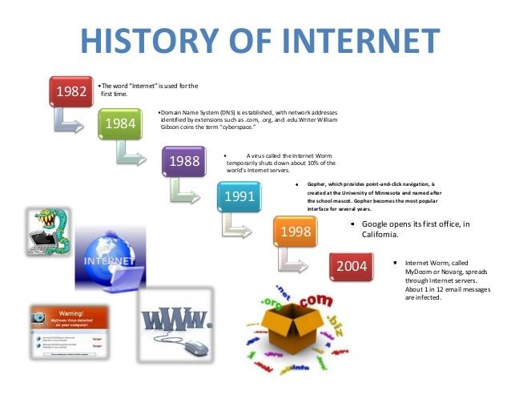

Discover how a simple network between two computers became the global system that connects the world today...
The Beginning
|
|
|---|---|
|  |
Expanding the Network (1970s)In the 1970s, scientists worked on new ways to connect different networks together. Two key researchers, Vint Cerf and Bob Kahn, developed the TCP/IP protocol — the communication system that still powers the Internet today. By 1983, ARPANET officially adopted TCP/IP, marking the true birth of the modern Internet. |
The Birth of the World Wide Web (1990s)In 1989, a British scientist named Tim Berners-Lee invented the World Wide Web (WWW) while working at CERN in Switzerland. He created the first web browser and web server, allowing people to view and share documents using links — which we now know as websites. The first website went live in 1991, and soon after, the Internet became accessible to the public. |
|
Internet Goes Public (Mid to Late 1990s)During the mid-1990s, the Internet grew rapidly. Web browsers like Netscape and Internet Explorer made it easy for people to surf the web. Companies started creating websites, and email became a popular way to communicate. This period also saw the rise of search engines like Yahoo and Google, making it easier to find information online. |
|
The Modern Internet
|
|